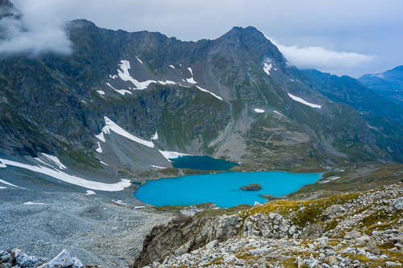
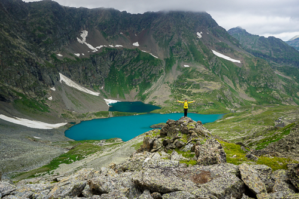
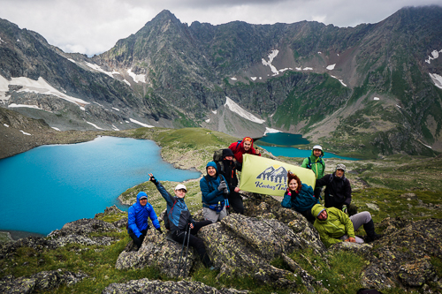
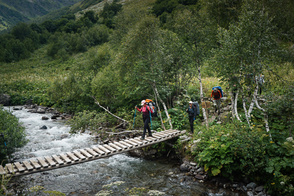

Имеретинские озёра являются самыми красивыми озёрами на Западном Кавказе!
Это 5 высокогорных озёр, расположенных в самом сердце Кавказского заповедника!
Кордон Закан - Нижняя стоянка у водопада. Километраж 9,5 км, набор высоты минимум 700 м
Тропа этого маршрута прекрасно маркирована и хорошо читаема с большим количеством указателей. Сегодняшний путь будет проходить по реликтовому хвойному лесу с небольшими участками березового криволесья. Через все броды перекинуты деревянные мосты. Если пойдете в конце августа или в начале сентября еще покушаете малину, которая растет ближе к месту стоянки. Тропа наша очень живописна, с большим количество замшелых камней и небольших ручейков, с цветами и грибами. Тропа как в сказке.
На месте стоянки есть несколько деревянных помостов под палатки, столы с навесами и туалеты. Помостов не так много, 3-4, не рассчитывайте, что они будут свободны. В 5ти минутах от места стоянки находится Большой Имеретинский водопад, к которому можно прогуляться.
Нижняя стоянка - Верхняя стоянка - озеро Безмолвия (рад) Километраж 2,5 км, набор высоты минимум 450 м + 1,5 км радиально, набор 150 м
Встаем, завтракаем, собираем лагерь и отправляемся дальше в путь на верхнюю стоянку. До верхней стоянки идти недолго, но сложно. От водопада начинается по настоящему горный рельеф Скально-осыпные склоны с довольно крутыми и тяжелыми подъемами. Здесь вам пригодятся треккинговые палки. Тропа маркирована и хорошо читаема, но нужно будет идти по камням и переходить небольшие препятствия в виде нагромождения камней и зарослей рододендрона.
Цвет горного озера зависит от солнечного света. Со сменой освещения, как правило меняется и сам цвет озера. Говорят, мы видим цвет донных отложений при освещении солнцем воды. Но вот, цвет озера Безмолвия всегда молочно-бирюзовый при любом освещении. Это большая особенность этого озера. Когда придете на озеро не забудьте взять фотоаппарат, сидушку и шоколадку. Здесь просто волшебно! Просто посидеть на камушке, погулять вдоль берега, потыкать пальцем на перевалы, которые кажутся недоступны. Озера находятся в глубоком горном цирке. Озеро Безмолвия находится на самом дне это цирка. Ощущения в таком цирке очень необычные и интересные.
На верхней стоянке ночевать будет ощутимо холоднее, чем на на нижней. Здесь вам предстоит провести 3 ночи. В нижней части цирка и в “в бутылочном горлышке”, в котором стоят палатки часто садится облако. Дымка плывет мимо, создавая сюрреалистические сюжеты и холодя не закрытые участки кожи. В идеале у вас должна быть тонкая пуховка или хотя бы пуховой жилет, чтобы не мерзнуть. А вот спальник лучше взять синтетику, потому что здесь очень влажно, и пух быстро впитает влагу и будет хуже греть. Это информация для туристов, которые имеют 2 вида спальников или берут его в аренду. Берите температуру комфорта 0-5 градусов.
Верхняя стоянка - смотровая над озером Буша - верхняя стоянка Километраж 7,2 км, набор высоты минимум 450 м
Закладываем на наш маршрут 5-6 часов. Всегда помним, что в высокогорье погода может резко измениться. Ещё полчаса назад было просто отлично, а сейчас идет сильный дождь. Также, облачность и сильный ветер требует одевать шапочку и перчатки. Обычная здесь температура летом днем +10+15. Поэтому берем с собой все вещи по списку.
План у нас такой. От лагеря так же идём к озеру Безмолвия, переходим по мостику брод, который раньше мы проходили по камням или разуваясь. Держим путь к озеру Ривьера, далее озеро Географов, далее смотровая над озером Буша, спускаемся к озеру Буша на его северный берег, далее спускаемся к озеру Безмолвия к полуострову откуда хорошо видно каменный остров в озере. И наконец, возвращаемся в лагерь, замкнув круг. Троп здесь нет, тем более маркировки. Где-то могут виднеться наметки тропы, но они очень быстро пропадают. Основная часть рельефа проходит по осыпным склонам, будьте очень осторожны, внимательно смотрите, куда ставите ногу. Камень может быть живой и шататься. Обычно, если впереди идет гид, он выбирает безопасный путь, лучше всего идти за ним прям шаг в шаг. Озеро Ривьера вам не особо понравится в сравнении с озеро Безмолвия. Оно маленькое и вода в нем серого цвета. Озеро Географов такой же круглой формы, но больше и с красивым неоновым цветом. Цветом надо любоваться сверху.
От озера Географов до смотровой над озером Буша, на которую редко кто ходит, переход непростой и с долей опасности. Нужно будет преодолеть 200 метров довольно крутого каменистого склона. Лучше это делать по диагонали, что называется траверсом. Если вы спустили на кого-то камень, сразу же кричать “Камень!” Это команда, которую должен знать каждый турист и применять при необходимости. Но вы не зря туда идете, отсюда открывается неземной вид, как будто с другой планеты. Озеро Буша распласталось под вами как огромный голубой кальмар или другое диковинное животное с несколькими щупальцами. Этот вид завораживает и удивляет воображение, потому что трудно себе такое вообразить до тех пор, пока не увидишь.
Участок Верхняя стоянка - стоянка у кордона Закан Километраж 14,5 км, сброс высоты минимум 1150 м
Сегодня у нас будет трудный день. Нам предстоит преодолеть весь спуск обратно к кордону закан. В чем сложность, ведь мы будем спускаться вниз, а не подниматься вверх? Сложность заключается в том, что будет экстремальная нагрузка на колени. 13 км спуска с потерей высоты более 1000 метров это очень серьезная нагрузка на коленные суставы. После таких переходов могут долго болеть связки и сухожилия, а в области колен появится точки напряжения - триггеры, которые потом можно снять при помощи массажа. Но это потом, а что нам делать сейчас?
Сейчас, на спуске, важно использовать 3 правила: Использовать треккинговые палки, они дают небольшую амортизацию на опорно-двигательный аппарат и позволяют распределять вес тела более равномерно, а не только на низ тела. Отдыхать каждый час по 10-15 минут, садиться, разминать и растирать область вокруг колен, чтобы улучшить кровообращение. Пить достаточно воды, каждый привал, чтобы восполнять водный баланс. Чтобы восполнять солевой баланс, в воду нужно добавлять соли - изотоники или шипучую таблетку с мульти минералами. На спуск закладываем 7 часов.
| В стоимость включено: | Не входит в стоимость: | Дополнительные расходы: |
|---|---|---|
|
|
|